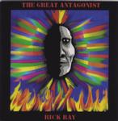

Home Artist links Label link

| Artist: | Rick Ray |
| Title: | The Great Antagonist |
| Label: | Neurosis Records |
| Length(s): | 70 minutes |
| Year(s) of release: | 1999 |
| Month of review: | 07/2000 |
Line up
Rick Ray - all instruments
Tracks
| 1) | Inside The Mind | 3.50
|
| 2) | Guitarsenic | 5.43
|
| 3) | Open Your Eyes | 4.52
|
| 4) | The Great Antagonist | 6.54
|
| 5) | Makes No Sense | 7.05
|
| 6) | Spinning Faster | 4.10
|
| 7) | A Sense Of Human | 1.06
|
| 8) | A Different Time | 6.42
|
| 9) | Guitargonaut | 4.37
|
| 10) | Don't Be Another Fool | 5.21
|
| 11) | Anything At All | 3.59
|
| 12) | American Highways | 5.32
|
| 13) | Fweep F'nork | 6.18
|
| 14) | | 3.23
|
| 15) | | 0.55
|
Summary
Read on (or read other reviews on this man, I've plenty of them, the first
ones are more detailed).
The music
Inside The Mind is the opening vocal track and the style is the same as
on the other albums I've so far reviewed: this is underproduced guitar rock,
slightly spacey with the somewhat gravelly vocals of Rick Ray. Guitarsenic
is for its name a rather jolly affair. Mostly solo guitar on this one in
Ray's typical noisy style. The melody is not so appealing, but the song is
more of a composition than you might first think. There is structure and
theme, although it seems like an extended jam. The drumming is a bit too
straightforward and it's on the automatic. Again the guitar has a space rock
feel to it. Maybe it is the noisy aspect of it, I'm not sure. Somewhere
past middle the song becomes quite bouncy, jolly even. Open Your Eyes is one
of those warning stories from Ray with prominent bass and for the most
part rather relaxed playing. The vocals seem a bit vocoded, giving the song
a more menacing character. There are some fingerquick passages on guitar here,
but like I said for the most part it is quite relaxed. The title track
has quite a different sound. Not the song I mean, but the production seems
different. Like it was recorded under different conditions or in a different
place. The song is quite relaxed like the previous one and the vocals seem
a bit far away. However, the song revolves around quite a nice melody and
can be considered the best track so far. Makes No Sense is the longest track
on the album and although it tends to plod on a bit there are some variation
rhythm wise in the chorus; the melody is quite memorable and we find here
another good guitar solo. That's something I have to hand to Ray: like Neil
Young he has the knack to just solo away and for some magic reason continue
to captivate. Not always mind you, it works better if the song is not too
straightforward, but I hope you know what I mean. On Spinning Faster
we have rather prominent monotonous percussion and the guitar soloing in the
back around the vocals, that seem to have little to do with the guitar
work. After the short instrumental A Sense Of Human we come to the moody
A Different Time. Not much happening here, although the part with the spoken
vocals have something going for them. Guitargonaut is a typical Ray
instrumental with some wailing guitar lines, somewhat bluesy, but still with
some fast fingerpicking. The drums sound a bit live here. Seems like playing
with brushes but without brushes. The bass bubbles nicely under. Don'y Be
Another Fool and Anything At All are both quite percussive and the percussion
on the former is quite loose, while on the latter it sounds a bit like
a percussion group (with solo guitar of course, but mixed into the back),
but mechanic as well. Fweep F'Nork opens with weird vocals, played backwards
or something it seems. The bonus tracks are only talk.
Conclusion
After four or so records by Ray reviewed by me, the albums show quite little
variation: low budget recording/production, the vocals aren't beautiful, though
they seem to fit in with the music, the guitarwork is often quite good
(and interesting to boot), but it seems I prefer it when Ray is in the context
of a band leaving the singing to others and also having live musicians around
him to add to the chemistry.
© Jurriaan Hage